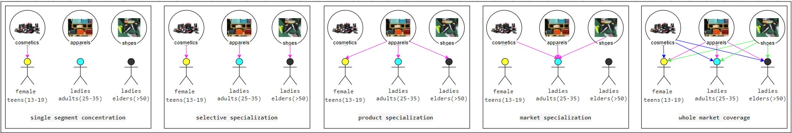
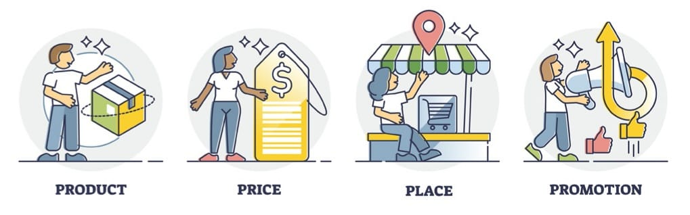

Introduction to Marketing Essentials ജയകുമാർ നായർ തയ്യാറാക്കിയത്
Introduction
- Kotlers definition, marketing is a societal process by which individuals and groups obtain what they need and want by creating, offering and freely exchanging products and services of value with others
# societal process, A society survives by consuming and seller supply the goods for consuming
# needs and wants, basically customer requirements, need is emotional or feeling and want is material which will satisfy your need
# individuals and groups, Individuals having individuality and groups have collective individuality
# creating, If the product required by the consumer is not available in the market then that product will be created. Procuerment is also a creation
# offering, informing the customer about 4Ps(Product,Price,Place and Promotion)
# freely exchanging, seller and customer should have alternatives to do the exchanging
# products and services, its the want part. Product is tangible and service is intangible
- Marketing, it is the process of planning and executing the conception, pricing, promotion and distribution of idea, goods and services to create exchanges that satisfy individual and org goals
- Marketing, is all about understanding the requirements of your customers and satisfying them more effectively than your competitors
- Value is utility(benefits) per cost
- Value in marketing, also known as customer-perceived value, is the difference between a prospective customer's evaluation of the benefits and costs of one product when compared with others
- What all can be marketed [GOPI PEE & SPIt] Goods, Organisation, Person, Information, Places, Events, Entertainments, Services, Properties, Ideas
- Types of Markets
# consumer market, own consumption by the consumer
# business market, output consumed by another industry, purchases in bulk for profit
# institutional market, consumed by an institution, purchases in bulk for non profit
- Marketing strategy refers to a business's overall game plan for reaching prospective consumers and turning them into customers of their products or services
- Basic building blocks of marketing strategy
# Segmentation, divides the market into various homogeneous groups based on some common parameters through segmentation
# Targeting, organization 'targets' a market by selecting one or more identified segments and concentrating on those segments
# Differentiation, distinguish company’s offerings from competitor’s offerings through differentiation
# Positioning, create a positive image in the minds of consumers through positioning
Segmentation
- Market segmentation is the process of dividing a broad consumer or business market into sub-groups of consumers based on some type of shared characteristics
- Base parameters(shared characteristics) for segmentation of consumer market are as follows,
# Geographic(what) ie, region, city size, density of population, climate
# Demographic(who) vital and measurable statistics of human population ie, births, gender, age, education, occupation, income, marital status, family size and death
# Psychographic(why) internal self of consumers and its psychology+demography ie, lifestyle, their activities, interests, personality, likes and dislikes etc
# Behavioral(how) based on their behaviour ie, customers approach to making purchase decision and usage of the product or service
- Behavioral segmentation can be categorized based on
# Needs and Benefits, eg: in case of pad locks, jewellery safety is the need and jewellery worth is the benefit
# Decision roles - initiator, influencer, decider, buyer and user
# User and Usage pattern (existing customer only). User status, Buyer rediness, Usage rate, Purchase occasion, Loyalty status
- User and Usage pattern details
# User status - user and non user
# Buyer readiness - not aware, aware, not informed(opinion not formed), informed(opinion formed), not interested, interested, intention to buy
# Usage rate - heavy user (uses shampoo 2 times or 3 times a day) and light user (uses shampoo once a week)
# Purchase occasion, ie, special occasion like festivals or office party or your regular purchase
# Loyalty status, loyalty a strong feeling of support or allegiance to a brand. Type of loyalists are Hard-core, Split, Shifting, Switchers
- Buyer readiness details
# Not aware, not aware about the product
# Aware, aware about the product
# Not informed, who is aware but not formed an opinion about the product
# Informed, aware and formed an opinion about the product
# Not interested, informed but not developed an interest to buy the product
# Interested, developed an interest but not enough intention to buy the product>
# Intention to buy, interested and intends to buy
- Loyalty status details
# Hard-core loyals, who buy the same brand all the time. IT companies like Apple or Google have many loyal customers
# Split loyals, split between 2 or 3 brands. These type of customers do not go crazy for one brand only they are OK with 2-3 brands(OK to travel with both Cox & Kings or Thomas cook)
# Shifting loyals, shift between 10 or more brands. However, shifting loyals is less loyal than split loyals
# Switchers, with no loyalty. Keep switching even when they liked a brand this is because they want to experience new things
Targeting
- Targeting means selecting one or more identified segments and concentrating on those segments rather than the whole market
- Target market selection criteria
# Segment's size and growth
# Segment’s structural attractiveness - Number of competitors, Entry barriers(need government permissions, patents), Exit barrier(lot of fixed assets, lot of customers)
# Organization’s objectives and resources
- Some of the targeting strategies are

# Single segment concentration
# Selective specialization
# Product specialization
# Market specialization
# Whole market coverage
Differentiation
- Differentiation is the act of designing a set of meaningful differences to distinguish the company’s offerings from competitor’s offerings
- Various differentiation parameters
# Product differentiation based on the product attributes like forms(physical structure), feature, performance, conformance, durability, reliability, repairability, style/design
# Service differentiation like ordering ease, delivery, installation, customer training, customer consulting, maintenance and repair
# Personnel differentiation like competence (കഴിവ്), courtesy (മര്യാദ), credibility (വിശ്വാസയോഗ്യമായ), reliability (വിശ്വാസയോഗ്യമായ), responsiveness (പ്രതികരണം), effective communication
# Channel and imagery differentiation
- Undifferentiated marketing assumes the lack of significant differences among the consumers and their requirements.
- A niche market is focused businesses promote their products and services to a small, specific and well-defined audience
- ‘Competitor’ is anyone who provides the same offering to the same target segment
- Types of competition include
# Brand level, COKE is competing with PEPSI
# Industry level, COKE is competing with the aerated drinks industry ie, Jeera soda, Sprite, Fanta, and Thums Up
# Form level, COKE is competing with the drinks industry ie, Tea and Coffee
# Generic level, COKE is competing with all available products for the same price point ie, Tiger biscut and Cup cake at ₹10
Positioning
- Positioning means creating a positive image in the minds of consumers
- Steps for deciding on a positioning requires
# Determining a frame of reference, Apple understood that using the old dump land phone as a frame of reference made the device instantly familiar to the masses
# Identifying the optimal points of parity(POP) and points of difference(POD) ie POP are the must-haves for any brand and POD are the unique features providing a competitive advantage
# Creating a brand mantra to summarize the positioning and essence of the brand eg Nike: Authentic Athletic Performance
4Ps
- 4 operational facets of marketing and the tools for marketing strategy otherwise known as marketing mix
- Those are producing excellent products, priced properly, making it available in the market at the right time, propagate and promote the distinctiveness of the product and the value it carries

Product
- A product is anything that can be offered to the market to satisfy a need or want. eg, [GOPI PEE & SPIt]
- Customers will choose a product based on their perceived(ഗ്രഹിക്കുക) value. A product can be categorized in multiple levels
# Core, core benefit of a hotel is to provide a place to rest or sleep when away from home
# Basic or generic product, basic benefits in hotel room includes a bed, a bathroom, towel, desk, etc. Basic products through which the core benefit is delivered
# Expected product, consumers normally expect when they buy the product like a fresh towel, clean bed, new soap,a fan and whatever when they book a hotel room
# Augmented product, exceeds customer expectation which leads to happiness or customer delight like free dinner, a mini bar. Expected & Augmented depends on what the market is offering
# Potential product, covers all possible augmentations and all possible transformations that a product may go through in future leads to customer delight. Like complimentary spa treatment, all wines etc
 - Consumer products are generally classified into four types those are convenience goods, shopping goods, specialty goods and unsought goods
# Convenience goods are just buy based on their convenience ie without any significant decision making or thought process. eg, soft drinks, soap. These kind of products are further classified into
@ Staples, consumer purchases regularly, eg, commodity goods(grains, oil, and natural gas), toothpaste or soap
@ Impulse, purchased without prior planning, eg, suddenly you see an ice-cream cone and buy it, suddenly, you see some chocolate and buy it
@ Emergency goods, forced to buy such product due to emergency situation, eg, burnt your hand, and buy an antiseptic cream like Burnol
# Shopping goods, consumer shops around and compares on brands, price, suitability, style, quality, for example, electrical appliances, furnitures, clothing
# Specialty goods, goods with unique characteristics or unique brand appeal that is not replaceable like high priced luxury cars or like low priced Heinz Ketchup
# Unsought goods, people don't look forward to buy in this product. eg, fire extinguishers, fire alarms, any life insurance products
- Consumer products are generally classified into four types those are convenience goods, shopping goods, specialty goods and unsought goods
# Convenience goods are just buy based on their convenience ie without any significant decision making or thought process. eg, soft drinks, soap. These kind of products are further classified into
@ Staples, consumer purchases regularly, eg, commodity goods(grains, oil, and natural gas), toothpaste or soap
@ Impulse, purchased without prior planning, eg, suddenly you see an ice-cream cone and buy it, suddenly, you see some chocolate and buy it
@ Emergency goods, forced to buy such product due to emergency situation, eg, burnt your hand, and buy an antiseptic cream like Burnol
# Shopping goods, consumer shops around and compares on brands, price, suitability, style, quality, for example, electrical appliances, furnitures, clothing
# Specialty goods, goods with unique characteristics or unique brand appeal that is not replaceable like high priced luxury cars or like low priced Heinz Ketchup
# Unsought goods, people don't look forward to buy in this product. eg, fire extinguishers, fire alarms, any life insurance products
 - Product line is a group of products that are closely related (satisfy similar type of needs, sold to same customer group and marketed through similar channels). eg, soaps (bar soaps and liquid soaps)
- A product line is one line/group of similar products that are sold within a company
- A product mix is the combined total of all the product lines sold in a company is also called product assortment
- Product line is a group of products that are closely related (satisfy similar type of needs, sold to same customer group and marketed through similar channels). eg, soaps (bar soaps and liquid soaps)
- A product line is one line/group of similar products that are sold within a company
- A product mix is the combined total of all the product lines sold in a company is also called product assortment
 - Eg, 1 product mix and 3 different product lines - soaps(bar and liquid soaps), shampoos(anti-dandruff, hair fall control and hair growth), toothpastes (gel, regular, herbal, and toothpaste for kids)
- A product line for any organization has got 2 properties
# Length is total products in that line
# Depth is total number of variants of each product offered in this line, variants include size, colour, flavours,
- A product mix for any organization has got 4 properties
# Length is total products in the product mix
# Breadth or width(വീതി) is number of product lines in the product mix
# Depth is total number of variants of each product offered in each line, variants include size, colour, flavours,
# Consistency is relationship, if distribution of 2 product lines are on the same channel then consistent on the distribution channel and if same raw material then consistent on raw material
- Product Line Analysis steps
# Understand each product lines market profile and performance.
@ Spreading the total product mix
@ Pull out the sales and profitability reports
@ Analyze the reports
# Review how the line is positioned against competitors lines
- Marketing managers will take product mix decision after the analysis to expanding the business and to increase the profitability
- Product mix decision refers to
# Adding a new or eliminating any existing product from the product mix
# Adding a new product line
# Lengthening an existing line
# Bringing new variants of a brand
- Product Market Mix Strategy
# Small companies usually start out with a product mix limited in width, depth and length; and have a high level of consistency
# However, over time, the company may want to differentiate products or acquire new ones to enter new markets by stretching the product line
@ Upward stretching, add higher quality, more expensive products
@ Downward stretching, add lesser quality, lower priced products
- Brands is defined as a name, term, sign, symbol, design or combination of them, intended to identify the goods and services of one seller or group of sellers and differentiate them from competitors.
- Brands is defined as a way of distinguishing yourself from the competitors and clarifying what you will offer that makes you the better choice and it will make a memorable impression on consumers
- Brands is a set of perceptions a consumer has about the products of a particular firm
- 4 brand strategy decisions to build strong brands are
# Brand Name Selection, the brand name decision may be the most obvious one. Few guidelines are
@ About a product’s benefits and qualities
@ Easy to pronounce, recognise, and remember
@ Distinctive
@ Extendable
@ Translate easily
@ Registration and legal protection
# Brand Sponsorship(ownership), a manufacturer has four brand sponsorship options
@ Manufacturer’s brand
@ Distributor brand(a store brand)
@ License brand, leasing a brand name from another company. Owner is licensor and licensee who took for rent. Arvind represent Arrow, GAP and Murjani Group represents Tommy Hilfiger.
@ Co-branding, join forces with another company to brand a product. Dell computers with Intel Inside, Intel processors
# Brand Development(brand strategy decision), developing brands, a company has four choices: line extensions, brand extensions, multibrands or new brands
@ New branding, new brand name and new product category. Procter and Gamble or Unilever, introducing a completely different category ie electrical appliances
@ Multi branding, One company with multiple brands. Procter and Gamble, Unilever introducing new toothpastes, detergent powders
@ Brand extensions, using existing brand names to new products
@ Line extension, using existing brand to variant of the existing products
- Eg, 1 product mix and 3 different product lines - soaps(bar and liquid soaps), shampoos(anti-dandruff, hair fall control and hair growth), toothpastes (gel, regular, herbal, and toothpaste for kids)
- A product line for any organization has got 2 properties
# Length is total products in that line
# Depth is total number of variants of each product offered in this line, variants include size, colour, flavours,
- A product mix for any organization has got 4 properties
# Length is total products in the product mix
# Breadth or width(വീതി) is number of product lines in the product mix
# Depth is total number of variants of each product offered in each line, variants include size, colour, flavours,
# Consistency is relationship, if distribution of 2 product lines are on the same channel then consistent on the distribution channel and if same raw material then consistent on raw material
- Product Line Analysis steps
# Understand each product lines market profile and performance.
@ Spreading the total product mix
@ Pull out the sales and profitability reports
@ Analyze the reports
# Review how the line is positioned against competitors lines
- Marketing managers will take product mix decision after the analysis to expanding the business and to increase the profitability
- Product mix decision refers to
# Adding a new or eliminating any existing product from the product mix
# Adding a new product line
# Lengthening an existing line
# Bringing new variants of a brand
- Product Market Mix Strategy
# Small companies usually start out with a product mix limited in width, depth and length; and have a high level of consistency
# However, over time, the company may want to differentiate products or acquire new ones to enter new markets by stretching the product line
@ Upward stretching, add higher quality, more expensive products
@ Downward stretching, add lesser quality, lower priced products
- Brands is defined as a name, term, sign, symbol, design or combination of them, intended to identify the goods and services of one seller or group of sellers and differentiate them from competitors.
- Brands is defined as a way of distinguishing yourself from the competitors and clarifying what you will offer that makes you the better choice and it will make a memorable impression on consumers
- Brands is a set of perceptions a consumer has about the products of a particular firm
- 4 brand strategy decisions to build strong brands are
# Brand Name Selection, the brand name decision may be the most obvious one. Few guidelines are
@ About a product’s benefits and qualities
@ Easy to pronounce, recognise, and remember
@ Distinctive
@ Extendable
@ Translate easily
@ Registration and legal protection
# Brand Sponsorship(ownership), a manufacturer has four brand sponsorship options
@ Manufacturer’s brand
@ Distributor brand(a store brand)
@ License brand, leasing a brand name from another company. Owner is licensor and licensee who took for rent. Arvind represent Arrow, GAP and Murjani Group represents Tommy Hilfiger.
@ Co-branding, join forces with another company to brand a product. Dell computers with Intel Inside, Intel processors
# Brand Development(brand strategy decision), developing brands, a company has four choices: line extensions, brand extensions, multibrands or new brands
@ New branding, new brand name and new product category. Procter and Gamble or Unilever, introducing a completely different category ie electrical appliances
@ Multi branding, One company with multiple brands. Procter and Gamble, Unilever introducing new toothpastes, detergent powders
@ Brand extensions, using existing brand names to new products
@ Line extension, using existing brand to variant of the existing products


 # Brand Positioning, a brand must be positioned clearly in target customers’ minds. Brand positioning can be done at any of 3 levels
@ On product attributes
@ On benefits
@ On beliefs and values
# Brand Positioning, a brand must be positioned clearly in target customers’ minds. Brand positioning can be done at any of 3 levels
@ On product attributes
@ On benefits
@ On beliefs and values
Price
- Objective - determine the adequate price for any product or service (pricing decision)
- For companies, it provides revenue; and for consumers, it is the cost
- A graph for quantity demanded vs price is called the demand curve
- Elasticity of Demand refers to the change of demand for every change of price
- Elastic demand means a significant change in quantity demanded when the small price gets changed
- Inelastic demand means the slight or no change in quantity demanded when the price gets changed (either reduced or increased)
- Different types of costs
# Fixed costs are costs that do not change with increase or decrease in production level or sales revenue. eg, a company must pay for rent, salaries for employees, electricity bill, etc.
# Variable costs are costs that vary directly with the level of production. eg, raw materials, packaging materials, transportation, etc
- Total cost = Fixed + Variable costs
- Average cost = Total cost / Number of units, is the cost per unit at that level of production
- Break Even refers to the revenues needed to cover a company's total expenses
- Break-even point (BEP) is the point at which costs and revenue are equal. At this point there is no loss or no gain
- Break even calculation
# Total fixed costs: ₹500,000, Variable costs per unit: ₹300, Sale price per unit: ₹500
# Break-even Unit Volume = Fixed Costs/(SP per Unit – VC per unit) ie, Break-even Unit Volume = 500,000/ (500 – 300) = 2,500 units to cover the costs or reach break even point
# 2,500 units x ₹500 = ₹1,250,000 of total sales to cover the costs or reach break even point or before any profits are realized
- Process of Price Setting
# Decide the pricing objective(ലക്ഷ്യം) eg, maximising profits, increasing sales volume, matching competitors' prices, deterring competitors or just pure survival
# Determining the demand(DTD) provides the base for setting a price ceiling(max amount allowed for a product or service). Demand is a function of desire, ability, and willingness
 # Estimating costs provides base for price setting
@ Identify the types of costs (fixed cost and variable cost)
@ Determine the per unit cost of your product (price should cover manufacturing cost + marketing cost + profit desired by the company)
# Analyzing competitors’ costs, prices, and offers (determine pricing parameters of your competitors will help you to decide our own pricing)
# Decide a pricing method, to set the specific price level that achieves companies goals and objectives, marketers make use of various pricing methods
@ Pricing based on producers prespective
$ Markup Pricing, adding a percentage to a cost to determine its selling price. Mark up price = unit cost / (1 – desired profit on sales)
$ Target return Pricing, expecting the return based on the investment. Unit cost + ((desired return * invested capital)/ unit sales)
@ pricing based on consumers prespective
$ Perceived value pricing, value which customers are willing to pay.
$ Value pricing, provide higher value to consumers ie, reducing price point, reorganize experience of shopping, etc. Few variants are
% loss leader pricing, reduce the price of grocery store staples (milk, meat, and eggs) to bare cost as loss leaders so customers might by other items
% EDLP(every day low pricing), low price without the need to wait for sale price events or comparison shopping
$ Going rate pricing, follow the leader pricing method. New players will follow the leader since the price is pre-defined
$ Sealed bid pricing, B2B, tendering process
$ Psychological pricing, eg, bata pricing or high pricing to show quality
# Setting the Final Price
@ Company's pricing objectives
@ Company's pricing policy
@ Needs and wants of the target consumer
@ Impact of other marketing activities ie, brand's quality, advertising related to the competition, etc
@ Impact of price on the other parties like other stakeholders such as dealers, distributors, salesperson, suppliers
@ Once the price is decided then review into these factors and say that whether the price is correct and then say, okay, this is done
# Estimating costs provides base for price setting
@ Identify the types of costs (fixed cost and variable cost)
@ Determine the per unit cost of your product (price should cover manufacturing cost + marketing cost + profit desired by the company)
# Analyzing competitors’ costs, prices, and offers (determine pricing parameters of your competitors will help you to decide our own pricing)
# Decide a pricing method, to set the specific price level that achieves companies goals and objectives, marketers make use of various pricing methods
@ Pricing based on producers prespective
$ Markup Pricing, adding a percentage to a cost to determine its selling price. Mark up price = unit cost / (1 – desired profit on sales)
$ Target return Pricing, expecting the return based on the investment. Unit cost + ((desired return * invested capital)/ unit sales)
@ pricing based on consumers prespective
$ Perceived value pricing, value which customers are willing to pay.
$ Value pricing, provide higher value to consumers ie, reducing price point, reorganize experience of shopping, etc. Few variants are
% loss leader pricing, reduce the price of grocery store staples (milk, meat, and eggs) to bare cost as loss leaders so customers might by other items
% EDLP(every day low pricing), low price without the need to wait for sale price events or comparison shopping
$ Going rate pricing, follow the leader pricing method. New players will follow the leader since the price is pre-defined
$ Sealed bid pricing, B2B, tendering process
$ Psychological pricing, eg, bata pricing or high pricing to show quality
# Setting the Final Price
@ Company's pricing objectives
@ Company's pricing policy
@ Needs and wants of the target consumer
@ Impact of other marketing activities ie, brand's quality, advertising related to the competition, etc
@ Impact of price on the other parties like other stakeholders such as dealers, distributors, salesperson, suppliers
@ Once the price is decided then review into these factors and say that whether the price is correct and then say, okay, this is done
Place
- Place means distribution channels, how the product will reach the customers (smooth flow of products)
- Distribution channels can be viewed as a set of interdependent organizations involved in the process of making a product or service available for consumption to the end consumer
- Independent organizations - who link manufacturer and consumer are called intermediaries, like distributors, dealers, wholesalers, retailers
 - For a product to be successful, its very important that it is communicated in right Way, right Place, right Time and right People
- Benefits of distribution channels
# Reaching customers easily
# Increase in customer base
# Less expenditure
# Market Knowledge
# Bridging the gaps
# Improved Efficiency
# Reaching to international customers
- Functions performed by the distribution channels/intermediaries
# Buying, purchasing a broad assortment of items from the producer or other channel members
# Storage and Carrying inventory
# Selling, selling goods to consumers or other channel members
# Transporting, arranges for the shipment of goods to the desired destination
# Financing, providing funds required to cover the cost of channel activities
# Promoting, contributing to advertising and engaging in personal selling efforts
# Negotiating, determining the final price of goods and the terms of payment and delivery
# Market Research, providing information about the needs of customers to the manufacturer
# Servicing, a variety of activities such as credit, delivery and returns.
# Networking, creating contacts of prospective buyers and networking
# Maintaining Price stability, sometimes middlemen absorb an increase in price of the products & continue to charge customers the same old price thus maintaining the price stability
- Some of the channel members
# Wholesalers
# Distributors
# Dealers
# Company's own sales force
# Retailers
- Wholesalers
- It involves buying / procuring in bulk from the manufacturer and selling it to the next member (mostly retailer) in the distribution channel in their desired quantity
- It is a commercial establishment that purchases in bulk from various manufacturers, stocks the items then offers complete assortment of the specified merchandise for resale to the retail stores
- It may be differentiated into various categories based on the functions carried out by them
# Merchant, who takes title of the merchandise procured, buys the items from the manufacturer
@ Full function wholesaler, provides a full set of functions
@ Limited service wholesaler, provides only part of functions
# Agent, do not take title or ownership. They are primarily involved in making the buying and selling parties meet, help in striking a deal, and pocket their fees
# Manufacturer's own sales force or branch offices, these offices usually carry little inventory and primarily take orders for the merchandise, either full or limited service provideres
- Retailers
- Business activities involved in selling goods and services to the final consumer for their personal or household use
- Procured the merchandise from the manufacturer or wholesaler in bulk and sell it to the end consumer in smaller quantities
- Characterics of retailing
# Like large number of transactions
# Less margin for transactions
# Average size of transactions is quite less
- Retailing in emerging economies is divided into two distinct categories
# Traditional or unorganized sector
# Modern or organized sector
- Types of Retail Formats
# Department store, a large shop stocking products in different departments
@ Yes on customer cervices
@ All of his daily needs products from pin to lan or needle to car
@ Soft and hard goods
@ Departmental basis
@ eg, MAX, splash, lifestyle, Carrefour
# Specialty stores, specialization on products and expertise and store carries a deep assortment within a narrow line of goods
@ Yes on customer Services
@ Florists, furniture stores, sporting-goods stores, and bookstores
@ eg, HomeCenter
# ‘Mom and Pop’ and ‘Kirana’ stores, these are traditional independent convenience stores
@ Yes on customer cervices
@ High prices
@ Cater to mostly local population
@ Unorganized sector
# Discount store, a shop that sells goods at less than the normal retail price
@ No on customer service
@ Low prices
@ High volume
@ eg, Walmart and Kmart
# Supermarket, a large self-service shop selling foods and household goods, aim to meet all their consumer's weekly needs
@ No on customer service
@ Low prices
@ Large
@ High-volume
@ Eg, Big Bazaar, Reliance Fresh
- Distribution channel level, the number of intermediaries between the producer and the consumer.
# Direct marketing channel (0 level), it does not have any intermediaries, goods directly go from the manufacturer to the customer eg, personal selling, telemarketing, manufacturers' own stores, or B2B
# Indirect marketing channel, we have multiple levels
@ 1 level, only one intermediary namely retailer. Manufacturer to retailer to the end consumer
@ 2 level, manufacturer to wholesaler to retailer to end consumer
@ 3 level, manufacturer to distributor to wholesaler to retailer to end consumer. Distributors are attached to the manufacturer where a wholesaler can carry products of different manufacturers
- For a product to be successful, its very important that it is communicated in right Way, right Place, right Time and right People
- Benefits of distribution channels
# Reaching customers easily
# Increase in customer base
# Less expenditure
# Market Knowledge
# Bridging the gaps
# Improved Efficiency
# Reaching to international customers
- Functions performed by the distribution channels/intermediaries
# Buying, purchasing a broad assortment of items from the producer or other channel members
# Storage and Carrying inventory
# Selling, selling goods to consumers or other channel members
# Transporting, arranges for the shipment of goods to the desired destination
# Financing, providing funds required to cover the cost of channel activities
# Promoting, contributing to advertising and engaging in personal selling efforts
# Negotiating, determining the final price of goods and the terms of payment and delivery
# Market Research, providing information about the needs of customers to the manufacturer
# Servicing, a variety of activities such as credit, delivery and returns.
# Networking, creating contacts of prospective buyers and networking
# Maintaining Price stability, sometimes middlemen absorb an increase in price of the products & continue to charge customers the same old price thus maintaining the price stability
- Some of the channel members
# Wholesalers
# Distributors
# Dealers
# Company's own sales force
# Retailers
- Wholesalers
- It involves buying / procuring in bulk from the manufacturer and selling it to the next member (mostly retailer) in the distribution channel in their desired quantity
- It is a commercial establishment that purchases in bulk from various manufacturers, stocks the items then offers complete assortment of the specified merchandise for resale to the retail stores
- It may be differentiated into various categories based on the functions carried out by them
# Merchant, who takes title of the merchandise procured, buys the items from the manufacturer
@ Full function wholesaler, provides a full set of functions
@ Limited service wholesaler, provides only part of functions
# Agent, do not take title or ownership. They are primarily involved in making the buying and selling parties meet, help in striking a deal, and pocket their fees
# Manufacturer's own sales force or branch offices, these offices usually carry little inventory and primarily take orders for the merchandise, either full or limited service provideres
- Retailers
- Business activities involved in selling goods and services to the final consumer for their personal or household use
- Procured the merchandise from the manufacturer or wholesaler in bulk and sell it to the end consumer in smaller quantities
- Characterics of retailing
# Like large number of transactions
# Less margin for transactions
# Average size of transactions is quite less
- Retailing in emerging economies is divided into two distinct categories
# Traditional or unorganized sector
# Modern or organized sector
- Types of Retail Formats
# Department store, a large shop stocking products in different departments
@ Yes on customer cervices
@ All of his daily needs products from pin to lan or needle to car
@ Soft and hard goods
@ Departmental basis
@ eg, MAX, splash, lifestyle, Carrefour
# Specialty stores, specialization on products and expertise and store carries a deep assortment within a narrow line of goods
@ Yes on customer Services
@ Florists, furniture stores, sporting-goods stores, and bookstores
@ eg, HomeCenter
# ‘Mom and Pop’ and ‘Kirana’ stores, these are traditional independent convenience stores
@ Yes on customer cervices
@ High prices
@ Cater to mostly local population
@ Unorganized sector
# Discount store, a shop that sells goods at less than the normal retail price
@ No on customer service
@ Low prices
@ High volume
@ eg, Walmart and Kmart
# Supermarket, a large self-service shop selling foods and household goods, aim to meet all their consumer's weekly needs
@ No on customer service
@ Low prices
@ Large
@ High-volume
@ Eg, Big Bazaar, Reliance Fresh
- Distribution channel level, the number of intermediaries between the producer and the consumer.
# Direct marketing channel (0 level), it does not have any intermediaries, goods directly go from the manufacturer to the customer eg, personal selling, telemarketing, manufacturers' own stores, or B2B
# Indirect marketing channel, we have multiple levels
@ 1 level, only one intermediary namely retailer. Manufacturer to retailer to the end consumer
@ 2 level, manufacturer to wholesaler to retailer to end consumer
@ 3 level, manufacturer to distributor to wholesaler to retailer to end consumer. Distributors are attached to the manufacturer where a wholesaler can carry products of different manufacturers
 - Type of market for serving
# Industrial products use direct marketing channel
# Consumer products use indirect marketing channel for reaching mass base of consumers and more penetration
- 3 distinct types of distribution systems to choose from
# Intensive—maximum coverage through all possible outlets. As many distributors, dealers, wholesalers, retailers engaged with all of them and try to reach as many consumers through as many outlets
# Selective—limited number of outlets in specific geographic areas target consumers
# Exclusive—only one channel member, it could be a distributor, it could be a wholesaler, it could be retailer
- Systematic approach for designing channels involves the following steps
# Analysis of consumer's desired service and output levels
@ Closer interaction with manufacurer and consumer for specific knowledge, specific audio requirements, specific video requirements, computer systems
@ No interaction required like regular FMCG kind of products
# Establishing the channel objectives
@ Profit
@ Growth
@ Market share
@ ROI
# Identify major channel alternatives available in the geographic location like online channels, the distributors, dealers, wholesalers, retailers, and companies' own sales forces
- Type of market for serving
# Industrial products use direct marketing channel
# Consumer products use indirect marketing channel for reaching mass base of consumers and more penetration
- 3 distinct types of distribution systems to choose from
# Intensive—maximum coverage through all possible outlets. As many distributors, dealers, wholesalers, retailers engaged with all of them and try to reach as many consumers through as many outlets
# Selective—limited number of outlets in specific geographic areas target consumers
# Exclusive—only one channel member, it could be a distributor, it could be a wholesaler, it could be retailer
- Systematic approach for designing channels involves the following steps
# Analysis of consumer's desired service and output levels
@ Closer interaction with manufacurer and consumer for specific knowledge, specific audio requirements, specific video requirements, computer systems
@ No interaction required like regular FMCG kind of products
# Establishing the channel objectives
@ Profit
@ Growth
@ Market share
@ ROI
# Identify major channel alternatives available in the geographic location like online channels, the distributors, dealers, wholesalers, retailers, and companies' own sales forces

 # Evaluating each possible combination, each possible alternative and choose the best
- Channel alternative, company can choose from a wide variety of channels from reaching cutomers
# Evaluating each possible combination, each possible alternative and choose the best
- Channel alternative, company can choose from a wide variety of channels from reaching cutomers
Promotion
- Promotion refers to set of activities to communicate the product or service information to the consumer to educate them, to attract them, and finally, encourage them to buy the product
- Promotion includes all activities that involve communicating with the customer about the product and its benefits in order to create awareness, increase demand, and possibly create brand loyalty
- Value, ultimate goal of marketing is to deliver value to the consumers or utility per cost or the difference between what the customer gets and how much he or she has to pay
- Value is communicated to the target consumer through effective positioning
- 2 ways of communication
# Personal, face to face ie, personal selling
# Nonpersonal, mass media ie, advertising
@ Paid form, advertising is usually paid by a sponsor
@ Non-paid form, publicity where sponsor is not there or it is not identified
- Promotion can be for ideas, goods, and services
- Promotion mix typically includes
# Advertising
# Sales promotion
# Personal selling
# Public relation and publicity
Advertising
- Basic purpose of advertising
# Generate awareness, about the product and where it is available this can be achieved by celebrity endorsement
# Creating a favorable attitude, towards the brand this is done by highlighting how it is superior to its competitors
# Ensuring customer loyalty, repeat the intended message and communicate the benefits in an attractive way through advertising and hope it works
- Purpose in another words, advertising is to identify and differentiate one product from another in order to persuade(influence) the consumer to buy that product
- American Marketing Association defines advertising as any paid form of non-personal persuasion and promotion of ideas, goods, and services by an identified sponsor
- Advertising offers a reason to buy
- Step by step for advertising management
# Setting up the advertising objective ie, objective of the product or brand. It could be growth, market share, survival, profit, any of these things.
# Setting the advertising budget, some methods like How much the competitors are spending or could be a percentage of the sales
# What and how we want to communicate the message, it could be through humor or could be through celebrity or could be through common man appeal
# Deciding on the media mix(combination) ie, through TV, through newspaper, through radio, through magazine, through various websites
# Benchmarks to find out the effectiveness of the ad campaign
 - Factors that needs to be considered when setting the advertising budget
# Stages of the product life cycle, More - new products usually requires large advertising budgets & Less - already established products and brands require a lower advertising budget
# Market share, More - to increase your market share & Less - maintaining the share of high market share brands usually requires less advertising spending
# Competition, More - when operating in a market with many competitors
# Advertising frequency, More - the number of repetitions required to convey a brand message to consumers has a clear impact on the advertising budget
# Product substitutability, More - brands that are less-differentiated or commodity-like product classes (such as soft drinks, banks and airlines) need a lot of advertising to establish a unique image.
- Available medias for advertisements
# Print media (Newspapers, Magazines)
# Outdoor media (Pamphlets, Posters, Hoardings, Neon signs, Electronic displays)
# Electronic media (Television, Radio)
# Interactive marketing (Email, Search Ads)
# Display Ads in web sites
# Social Media (Facebook, Twitter, LinkedIn)
Sales promotion
- Sales promotion is a tool to promote sales, these are short-term programs aimed at maximizing/incresing sales within a short period of time
- Sales promotion offers an incentive to buy
- 3 categories of sales promotion
# Consumer promotion (aimed at consumers and pull strategy ie consumers will pull the product in the pipeline. Eg, free samples, coupons, cash refunds, price offs, different prizes, sweepstakes)
# Trade promotion (aimed at wholesaler or retailer and push strategy ie trade will push the product to the customers. Eg, display allowances, free goods to the trade (wholesaler or retailer))
# Business and sales force promotion (trying to build in an excitement in the product, increase the demand and push the sales. Eg, trade shows, conventions, contests for sales reps)
- Objectives of sales promotion
# To increasing sales volume
# To speed up sales for different slow-moving products
# To check the fluctuation in sales—some category is doing well, other category is not doing so well
# To attract new customers for trial, for first purchase
# To encourage consumers for repeat purchase when they have two–three brands which are equally good or equally bad and they could switch between anyone of them
# To clear inventories—end-of-the-season sales to clear up inventories
- Tools for sales promotions
# Free Samples: free samples are used to introduce a new product and as a sales tool to attract the attention of prospective buyers
# Prize schemes: prizes are offers of the chance to win cash, trips, or merchandise as a result of purchasing something
# Coupons: these are certificates issued by the retailer when purchasing a particular item, Its an effective promotion tool for promoting mature products
# Refunds: consumer sends a specified “proof of purchase” to the manufacturer for “refunds”
# Free trials: invite prospects to try the product without cost with the hope of closing the sale
# Premiums (gifts): merchandise offered at a relatively low cost or free as an incentive to purchase a particular product
# Point of Purchase displays: P-O-P displays and demonstrations take place at the point of purchase or sale
Personal selling
- Personal selling involves a face-to-face interaction with customers, wherein there is a quick response and personal contact and confrontation
- Today the work of salesman is not just limited to sales, but cultivate relationships
- Process of personal selling
# Identifying and qualifying the prospects, who could be our customer for personal selling and who would not be
# Decide on how to approach the identified type of customer
# Presentation and demonstration
# Closing, ie, actually selling the product, collecting the cash, and then providing the customer with the product with their own specifications
# Followup and maintenance to ensure customer satisfaction and repeat business
Public Relations
- Public relations focuses on an organisation’s relationships with its public ie, create an overall good imagery about the company
- The best PR departments counsel(ഉപദേശം) the top management to adopt positive programs and eliminate questionable practices so that negative publicity doesn't arise in the first place
- PR is little more philosophical. Instead of looking at specific products or services, it is talking about overall organizations to deal with public opinions. To be always in the news
- PR professionals should find or create favorable news about the company, its product, its people, and to get the media to accept press releases and attend press conferences
- Some of the PR tools are promote brands and corporate names by sponsoring and publicizing events, like sports events, build goodwill by contributing money and time and media bites for good causes
Publicity
- Publicity can be defined as a form of promotion that provides news or information in the media regarding the product, service, or organization, but it is not controlled by the organization
- Some of the publicity tools are any news article, cover story, TV news story, any seminar, any speech where the product or service or organization is mentioned or discussed
- Difference between public relation and publicity is public relation is planned by the organization and paid for it, whereas publicity is not planned and not paid
- Factors that needs to be considered when setting the advertising budget
# Stages of the product life cycle, More - new products usually requires large advertising budgets & Less - already established products and brands require a lower advertising budget
# Market share, More - to increase your market share & Less - maintaining the share of high market share brands usually requires less advertising spending
# Competition, More - when operating in a market with many competitors
# Advertising frequency, More - the number of repetitions required to convey a brand message to consumers has a clear impact on the advertising budget
# Product substitutability, More - brands that are less-differentiated or commodity-like product classes (such as soft drinks, banks and airlines) need a lot of advertising to establish a unique image.
- Available medias for advertisements
# Print media (Newspapers, Magazines)
# Outdoor media (Pamphlets, Posters, Hoardings, Neon signs, Electronic displays)
# Electronic media (Television, Radio)
# Interactive marketing (Email, Search Ads)
# Display Ads in web sites
# Social Media (Facebook, Twitter, LinkedIn)
Sales promotion
- Sales promotion is a tool to promote sales, these are short-term programs aimed at maximizing/incresing sales within a short period of time
- Sales promotion offers an incentive to buy
- 3 categories of sales promotion
# Consumer promotion (aimed at consumers and pull strategy ie consumers will pull the product in the pipeline. Eg, free samples, coupons, cash refunds, price offs, different prizes, sweepstakes)
# Trade promotion (aimed at wholesaler or retailer and push strategy ie trade will push the product to the customers. Eg, display allowances, free goods to the trade (wholesaler or retailer))
# Business and sales force promotion (trying to build in an excitement in the product, increase the demand and push the sales. Eg, trade shows, conventions, contests for sales reps)
- Objectives of sales promotion
# To increasing sales volume
# To speed up sales for different slow-moving products
# To check the fluctuation in sales—some category is doing well, other category is not doing so well
# To attract new customers for trial, for first purchase
# To encourage consumers for repeat purchase when they have two–three brands which are equally good or equally bad and they could switch between anyone of them
# To clear inventories—end-of-the-season sales to clear up inventories
- Tools for sales promotions
# Free Samples: free samples are used to introduce a new product and as a sales tool to attract the attention of prospective buyers
# Prize schemes: prizes are offers of the chance to win cash, trips, or merchandise as a result of purchasing something
# Coupons: these are certificates issued by the retailer when purchasing a particular item, Its an effective promotion tool for promoting mature products
# Refunds: consumer sends a specified “proof of purchase” to the manufacturer for “refunds”
# Free trials: invite prospects to try the product without cost with the hope of closing the sale
# Premiums (gifts): merchandise offered at a relatively low cost or free as an incentive to purchase a particular product
# Point of Purchase displays: P-O-P displays and demonstrations take place at the point of purchase or sale
Personal selling
- Personal selling involves a face-to-face interaction with customers, wherein there is a quick response and personal contact and confrontation
- Today the work of salesman is not just limited to sales, but cultivate relationships
- Process of personal selling
# Identifying and qualifying the prospects, who could be our customer for personal selling and who would not be
# Decide on how to approach the identified type of customer
# Presentation and demonstration
# Closing, ie, actually selling the product, collecting the cash, and then providing the customer with the product with their own specifications
# Followup and maintenance to ensure customer satisfaction and repeat business
Public Relations
- Public relations focuses on an organisation’s relationships with its public ie, create an overall good imagery about the company
- The best PR departments counsel(ഉപദേശം) the top management to adopt positive programs and eliminate questionable practices so that negative publicity doesn't arise in the first place
- PR is little more philosophical. Instead of looking at specific products or services, it is talking about overall organizations to deal with public opinions. To be always in the news
- PR professionals should find or create favorable news about the company, its product, its people, and to get the media to accept press releases and attend press conferences
- Some of the PR tools are promote brands and corporate names by sponsoring and publicizing events, like sports events, build goodwill by contributing money and time and media bites for good causes
Publicity
- Publicity can be defined as a form of promotion that provides news or information in the media regarding the product, service, or organization, but it is not controlled by the organization
- Some of the publicity tools are any news article, cover story, TV news story, any seminar, any speech where the product or service or organization is mentioned or discussed
- Difference between public relation and publicity is public relation is planned by the organization and paid for it, whereas publicity is not planned and not paid
For a product to be successful, its very important that it is communicated in
- right Way
- right Place
- right Time
- right People
Satisfaction, is the main point the customer will consider most before buying a product
ME-TOO kind of products, not having a good differentiation with other competitors.
USP unique selling proposition, significant logical different from others to buy. eg, "you get fresh, hot pizza delivered to your door in 30 minutes or less or it's free".
ESP emotional selling proposition, emotional reasons to buy. eg, "Gillette: The best a man can get"
Channels through which the product or the service reaches the customers. Available channels are
- direct selling
- catalog direct
- network marketing
- value-added resale
- digital advertisements
- events
- SEO marketing
- email marketing
- indirect marketing
Dealer is someone who buys and sells the goods by himself
Distributors distribute the goods and services to other dealers and business.
An outlet is a store, shop or other commercial establishment selling goods direct to the public, often from a single manufacturer or producer.
Channel is designed for smooth flow of products from manufacture to consumers
The product life cycle refers to the length of time a product is introduced to consumers into the market until it's removed from the shelves
Segment’s structural attractiveness
Detailing on draft page 1